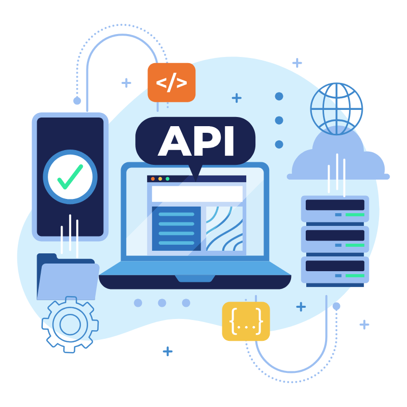
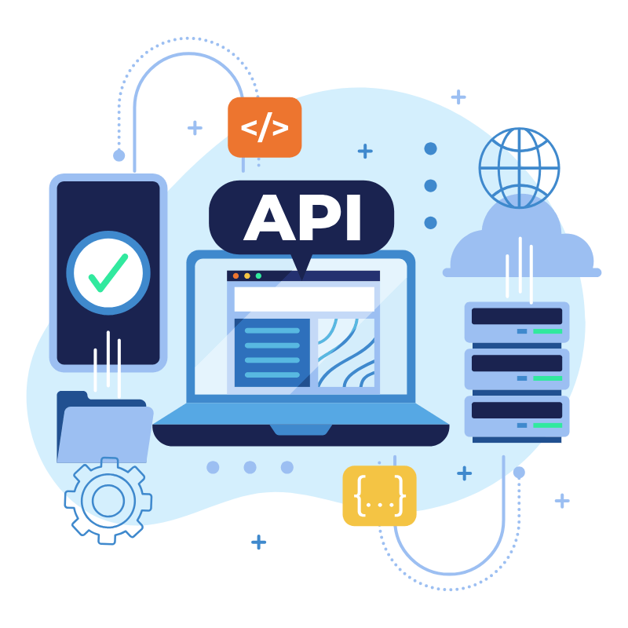

Aqui você encontra a Solução
completa para seu negócio.

Desenvolvo a solução que seu negócio precisa para vender pela internet.
Nossa missão é oferecer as ferramentas e todo o suporte necessário para que a sua empresa tenha sempre os melhores resultados.
 

Conheça minha trajetória até aqui.
Olá, meu nome é Marcelo Bevilacqua de Andrade e sou apaixonado por tecnologias.
Meu primeiro computador foi um TK-3000-2 quando eu 12 anos em 1993, e somente em 1998 consegui meu primeiro computador com Windows.

Em 2016 realizei um curso na área de TI e, desde então, estou buscando conhecimento em programação e desenvolvimento Web e Desktop.
Hobbies
Comecei a jogar videogame aos 6 anos e nunca mais parei. Claro que tudo tem seu tempo e, ao longo dos anos, eu sempre reservei um tempinho para jogar.
Sou da era dos Arcades/Fliperama/Atari e passei por etapas de evolução dos games. Ainda guardo alguns desses consoles e jogos como recordação e coleção.


Sempre gostei de andar de bicicleta e tenho duas das quais mais gosto: uma Monareta e uma Barra Circular.

Soft Skills
Minhas soft skills desempenham um papel fundamental no meu desenvolvimento profissional. Acredito que uma comunicação clara e eficaz é essencial para a colaboração em equipe, permitindo que ideias e feedback sejam compartilhados abertamente.
Além disso, sou hábil na resolução de problemas, sempre buscando analisar situações de forma crítica e encontrar soluções criativas.
A empatia é uma qualidade que valorizo, pois me permite entender melhor as necessidades e perspectivas dos outros, fortalecendo o trabalho em equipe.
Quando trabalhei no Instituto Brasileiro de Geografia e Estatística como Agente Recenseador e Mapeamento e Pesquisa, fiz entrevistas com quase 3 mil pessoas ao longo de 6 meses fortalecendo o entendimento sobre empatia.
Estou sempre disposto a me adaptar a novas circunstâncias, o que me ajuda a enfrentar desafios de maneira eficiente.
Por fim, a gestão do tempo é uma habilidade que cultivo, garantindo que minhas tarefas sejam organizadas e priorizadas adequadamente, contribuindo para a produtividade e o sucesso dos projetos em que estou envolvido.
Formações + Cursos
Em Março de 2016, ingressei na Unicesumar no curso de Sistemas para Internet e finalizei em Dezembro de 2018.
Após uma pausa nos estudos, retomei em 2021, estudando Java, Spring Boot, SQL, versionamento com Git, GitHub, e desenvolvendo APIs do início ao fim. Participei do curso CC50 de introdução a Ciencia de Computação de Harvard no Brasil através da Fundação Estudar.
Experiência em Programação
Através de cursos da desenvolvedora Loiane no YouTube e em seu blog Loiane.training, aprendi o básico e intermediário da linguagem de programação Java.
Participei de bootcamps em 2023 e 2024 pela plataforma DIO.me, onde aprendi a criar APIs usando Java + Spring Boot e Kotlin + Spring Boot.
Em 2024 Na plataforma Alura em parceria com a Oracle realizei um curso de formação Front-End , onde aprendi o básico em Javascript, Html,Css e React.
Diplomas e Certificados